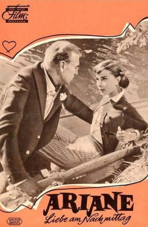

#7981 Ariane - Liebe am Nachmittag
Alternativ: Love in the Afternoon
 
 IMDB-Wertung: 7.3 / 10
IMDB-Wertung: 7.3 / 10  Metascore: 0
Metascore: 0 
Monsieur X engagiert einen Privatdetektiv, um herauszufinden, mit wem seine Frau ihn betrügt. Als der Detektiv die Frau in den Armen des millionenschweren Playboys Frank Flannagan ertappt, informiert er ihren erwartungsgemäß wütenden Ehemann, der sofort ankündigt, den Ehebrecher zu töten. Ariane, Tochter des Privatermittlers, wird Ohrenzeugin des Gesprächs und warnt Flannagan vor dem wütenden Gatten, womit eine Reihe von nachmittäglichen Treffen zwischen ihr und dem Playboy beginnt...
Jahr: 1957
Dauer: 124 Minuten
FSK: 16
Land: USA Studio: Allied Artists PicturesTonspuren: DD2.0 - ,
Untertitel:
Auflösung: 1080p (1920x1080) Größe: 11468 MB
Genre: Drama, Komödie, Krimi, Liebe
Regisseur:  Billy Wilder
Billy Wilder
Drehbuch: Billy Wilder
Soundtrack:
Darsteller:
 Gary Cooper als Frank Flannagan
Gary Cooper als Frank Flannagan Audrey Hepburn als Ariane Chavasse / Thin Girl
Audrey Hepburn als Ariane Chavasse / Thin Girl- Maurice Chevalier als Claude Chavasse
 John McGiver als Monsieur X
John McGiver als Monsieur X- Van Doude als Michel
- Lise Bourdin als Madame X
- Françoise Brion als Minor Role (uncredited)
- Louis Jourdan als Narrator (uncredited)
- Franz Waxman als Minor Role (uncredited)
- Audrey Young als Frank's Opera Date (uncredited)
- Olga Valéry als Hotel Guest with Dog
- The Gypsies als Themselves
- Marc Aurian als Couple Drenched by Water Wagon (uncredited)
- Vera Boccadoro als Couple Drenched by Water Wagon (uncredited)
- Charles Bouillaud als Ritz Employee (uncredited)
- George Cicos als Minor Role (uncredited)
- Leila Croft als Swedish Twin (uncredited)
- Valerie Croft als Swedish Twin (uncredited)
- Guy Delorme als Gigolo (uncredited)
- Filo als Flannagan's Chauffeur (uncredited)
- Gloria France als Client at Butcher's (uncredited)
- Victor Gazzoli als Minor Role (uncredited)
- Gyula Kokas als Minor Role (uncredited)
- Michael Kokas als Minor Role (uncredited)
- Charles Lemontier als General (uncredited)
- Christian Lude als General (uncredited)
- Léo Marjane als Singer in French Version (uncredited)
- Eve Marley als Tandemist (uncredited)
- Georges Perrault als Couple Drenched by Water Wagon (uncredited)
- Minerva Pious als Maid at the Ritz (uncredited)
- Jean Rieubon als Tandemist (uncredited)
- Betty Schneider als Couple Drenched by Water Wagon (uncredited)
- Michelle Selignac als Widow (uncredited)
Datei: X:\1950-1959\Ariane - Liebe am Nachmittag (1957, FSK16, 1920x1080).mkv seit 09.01.2018
Festplatte: HD 1900-1970
 Es gibt insgesamt 141 Filme in der Gruppe '1950-1959'
Es gibt insgesamt 141 Filme in der Gruppe '1950-1959'